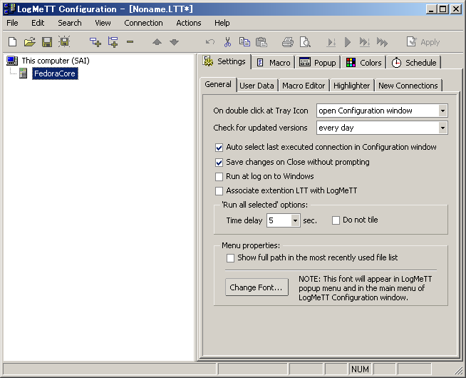
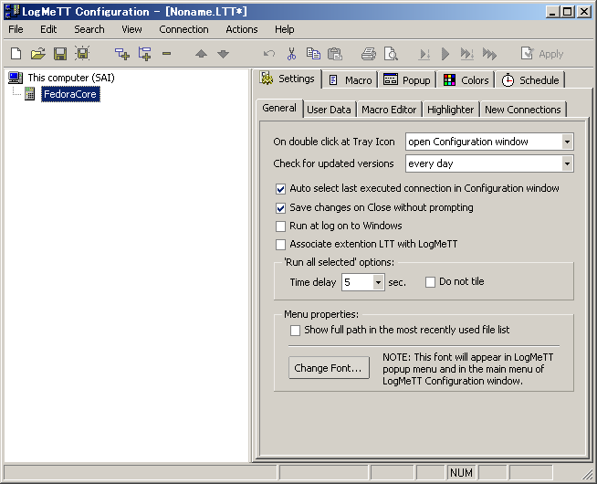

| LogMeTT Tutorial | |||
| LogMeTTとは | |||
| LogMeTTはターミナルエミュレータTeraTermのランチャーツールです。同様のツールにTeraTerm Menuがありますが、それを超える位置付けにあるのがLogMeTTです。カナダ在住のBoris氏により開発されています。LogMeTTはTeraTermに付属しています。 | |||
| LogMeTTでできること | |||
| LogMeTTを利用することにより、リモートホストへの自動接続を管理することができます。リモートホストは階層構造で登録することができるので、リモートホストが多数ある場合でも効率的に管理することが可能となります。また、設定次第ではリモートホストへの自動ログインも可能です。 | |||
| リモートホストへの自動処理などをマクロで組むと、スケジュール化して作業を自動化できます。 | |||
| 最新バージョンの入手先 | |||
| TeraTermに付属しているLogMeTTのバージョンが古い場合は、最新バージョンにアップデートすることができます。 | |||
| LogMeTT: 最新バージョンのダウンロード | |||
| 起動方法 | |||
| LogMeTTはTeraTermのFileメニューから呼び出すことで、起動することができます。起動すると、タスクトレイに常駐します。LogMeTTのアイコンに対する操作として以下の動作が規定されています。 | |||
| ダブルクリック → TeraTermの単体起動 | |||
| 右クリック → メニューの呼び出し | |||
| LogMeTTの設定を変更することで、Windowsへのログオン時に自動的にLogMeTTを起動させることもできます（後述）。 | |||
| 設定 | |||
| 実際にLogMeTTを使って、リモートホストへSSH2による自動接続を行う設定を追加してみることにします。以下の手順を踏まえることで、LogMeTTの使い方を理解できることでしょう。 | |||
| 1. LogMeTTのタスクトレイアイコンを右クリックして、"Configure..."を選ぶ。 | |||
| 2. 設定ダイアログが表示される。"General"タブの"Run at log on to Windows"にチェックを入れておくと、Windowsへのログオン時にLogMeTTが自動起動されるようになる。 | |||
| 3. "Connection"メニューから"Add child"を選ぶと、エントリが1つ追加される。F2キーを押下して、適切な名前に変更する。 | |||
 |
|||
| 4. "Macro"タブを選び、リモートホストへログインするためのマクロを記述する。たとえば、ユーザ名を固定とし、パスワードはダイアログボックスで入力させたい場合は、次のようなマクロを書く。もちろん、パスワードをマクロ内に記述してもよいが、マクロの取り扱いには注意すること。 | 4a. "Macro"タブを選び、リモートホストへログインするためのマクロを記述する。ユーザ名を固定とし、パスワードを暗号化して記憶（ローカル保存）させたい場合は、次のようなマクロを書く。 | ||
| username = 'nike' | username = 'user' | ||
| hostname = '192.168.1.3' | hostname = 'remote.host' | ||
| ;;;;;;;;;;;;;;;;;;;;;;;;;;;;;;;;;;;;;;;;; | ;;;;;;;;;;;;;;;;;;;;;;;;;;;;;;;;;;;;; | ||
| msg = 'Enter password for user ' | getpassword 'C:\Program Files\teraterm\filename.dat' 'userpass' inputstr | ||
| strconcat msg username | |||
| passwordbox msg 'Get password' | |||
| msg = hostname | msg = hostname | ||
| strconcat msg ':22 /ssh /auth=password /user=' | strconcat msg ':22 /ssh /2 /auth=password /user=' | ||
| strconcat msg username | strconcat msg username | ||
| strconcat msg ' /passwd=' | strconcat msg ' /passwd=' | ||
| strconcat msg inputstr | strconcat msg inputstr | ||
| connect msg | connect msg | ||
| ※getpassword 'filepath\filename' '識別子' $格納変数 | |||
| 同一格納ファイルに複数の識別子でパスワードを暗号化保存できる。 | |||
| 4b. "Macro"タブを選び、リモートホストへログインするためのマクロを記述する。telnet を利用する場合は別の方法が必要。 | |||
| username = 'user' | |||
| hostname = 'remote.host' | |||
| ;;;;;;;;;;;;;;;;;;;;;;;;;;;;;;;;;;;;; | |||
| msg = 'Enter password for user ' | |||
| strconcat msg username | |||
| passwordbox msg 'Get password' | |||
| ; パスワードをローカル保存したい場合は上3行の代わりに下を使う。 | |||
| ; getpassword 'C:\Program Files\teraterm\filename.dat' 'userpass' inputstr | |||
| msg = hostname | |||
| strconcat msg ':23' | |||
| strconcat msg ' /nossh' | |||
| connect msg | |||
| ; login session ※telnetではホストの応答内容にあわせて記述を変更(ログインプロンプト) | |||
| UsernamePrompt = 'Please login:' | |||
| PasswordPrompt = 'Please Enter password:' | |||
| ; login | |||
| wait UsernamePrompt | |||
| sendln username | |||
| wait PasswordPrompt | |||
| sendln inputstr | |||
| 5. "Colors"タブでTeraTermの配色を決定する。 | |||
| 6. F9キーを押下して、マクロが正しく動くかを検証する。 | |||
| 7. 問題なければ、設定内容を保存する。 | |||
| 8. 登録したリモートホストは次回から右クリックメニューから選択することができる。 | |||
| 9. このとき、Popupにメッセージを組み込んでおくと、下記のポップアップメッセージが表示される。 | |||
| 重要なホストに接続する際や、root等の特権アクセスのマクロにメッセージを組み込むとよいだろう。 | |||
| OKを押すとMacroが実行され、Cancelを押すとMacroは実行されない。 | |||
| 10. Colorsタブでは、接続メニュー毎にTeraTermの配色を変更できる。 | |||
| Popupとあわせ、重要なホストに接続する際等のメニュー配色はわかりやすくするとよいだろう。 | |||
| 11. Scheduleタブでは、自動実行させることができる。 | |||
| 上手にマクロを組めば、こんなことができます。 | |||
| ・定期的に電源をon/off | |||
| ・Settings -> User Dataと組み合わせ、障害発生時にe-mailや電話させるなどの自動処理 | |||
| ・定時バックアップ、ステータスチェック | |||
| ※注意:メニューの階層は親から順番に実行されてしまうため、子をスケジュールに入れておくと | |||
| その親もすべて実行される。単一タスクを行いたい場合は独立させましょう（This computer直下) | |||
| また、基本ですがホストとLogMeTTを実行するPCの時刻差異に注意すること。 | |||
| Scheduleを実行する場合は、後述の自動ログをONにすることをお勧めします。 | |||
| 後で何が起きたかわからなくなってしまわないように。 | |||
|
|
|||
| 設定後、Verify valuesを押すと値の整合性を確認して、修正してくれます。必ず押して確認しましょう。 | |||
|
|
|||
| 12. Settings -> New Connectionsで、Log file creationが "Start logging"になっていると、 | |||
| メニューから起動した場合自動的にログが取得されるので非常に便利 | |||
| ($TeraTerminstallPath\Logs\$LogMeTTメニュー名_$日付時間.log) | |||